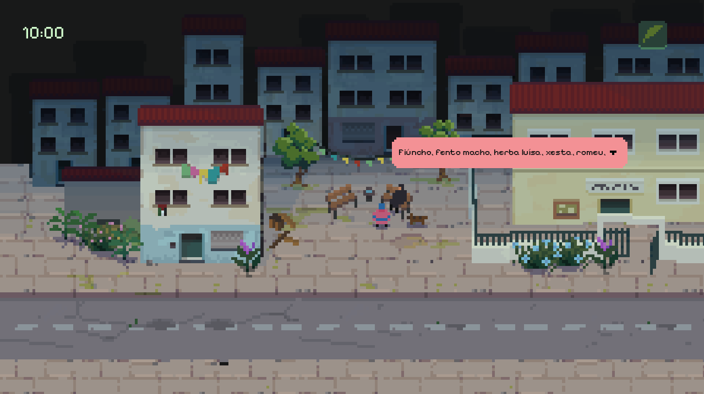
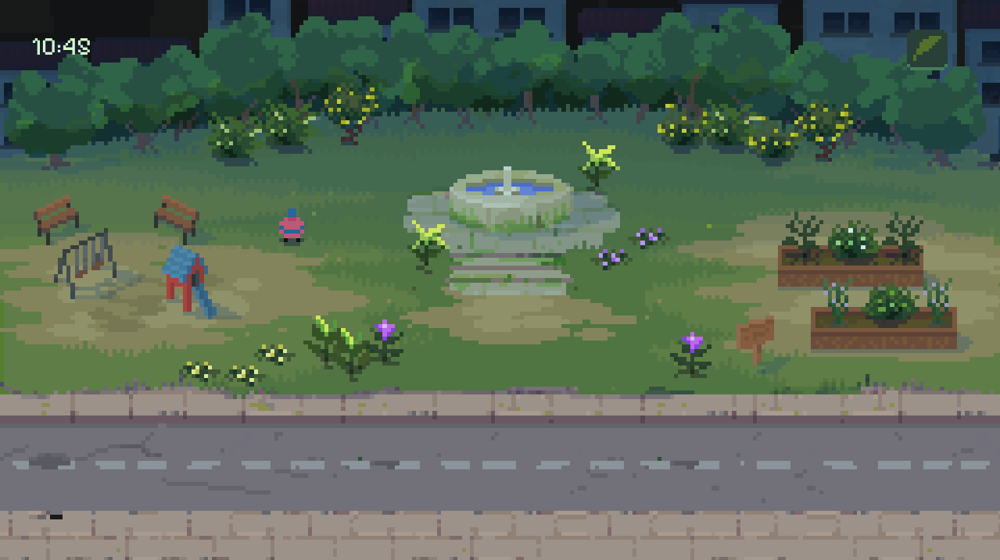
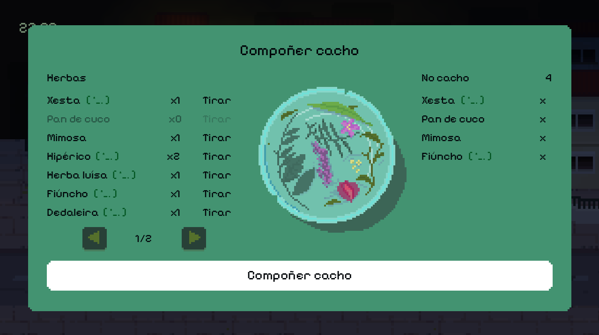

Cada hierba esconde un secreto.
Algunas también muerden.
Florilexio es una aventura de exploración y recolección para quien salió una vez a por manzanilla y volvió tres horas después con una maldición y un amigo nuevo.

Ver antes de creer
Un adelanto de qué se siente perderse a propósito.
Un mundo hecho para perderse en él

Cada seto esconde algo
El mapa de Florilexio no te lleva de la mano. Detrás de cada muro de piedra, cada claro raro y cada puerta que «seguro que no lleva a ningún sitio» hay una historia esperando — y a veces, alguien esperando que dejes de fisgonear.
Wishlist en SteamSales a por hierba de San Juan. Vuelves con otra cosa.
Recolecta, sécala, mézclala, o simplemente cárgala en la cesta mientras decides si de verdad quieres saber para qué sirve. El bucle de salir, explorar y volver premia la curiosidad tanto como la paciencia.
Wishlist en Steam
La magia tiene efectos secundarios. Normalmente cómicos.
Cada hechizo mal calculado, cada ingrediente confundido y cada secreto desenterrado tiene consecuencias — casi nunca las que esperabas, casi siempre motivo de una buena anécdota.
Wishlist en SteamUn vistazo al mundo de Florilexio
+ más capturas muy pronto
¿Te suena esto?
Te enganchó el bucle de salir, recolectar y volver de Dredge — pero preferirías que lo que acecha en la oscuridad sea una cabra con muy malas pulgas en vez de un horror cósmico.
De pequeño (o no tan pequeño) te perdiste horas en el mapa de A Link to the Past buscando la última cueva secreta, y todavía no lo has superado.
Si alguna de las dos te ha sacado una sonrisa, Florilexio es para ti.
Lo que dicen de Florilexio
Próximamente — o eso esperamos.
Somos Tortizorza
[Aquí va la historia real: quiénes sois, cuántos sois, dónde estáis, y por qué decidisteis que un juego sobre recolectar hierba de San Juan con muy mala suerte era una buena idea. Esta sección funciona mejor si sois vosotros de verdad — con el mismo tono y humor que el resto de la web — y no una biografía genérica de estudio.]
Preguntas frecuentes
¿En qué plataformas estará disponible?
[Plataformas por confirmar — Steam (PC) previsto]
¿Cuándo sale?
[Fecha de lanzamiento por confirmar]
¿Cuánto costará?
[Precio por confirmar]
¿En qué idiomas estará disponible?
[Idiomas por confirmar]
¿Eres prensa o creador de contenido?
Descarga capturas en alta resolución, el logo del estudio y una hoja de datos del juego.
Descargar press kit